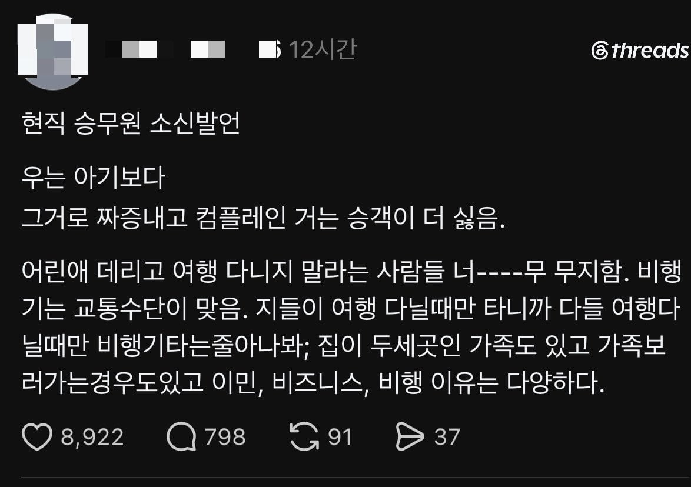

현직 승무원 소신발언, 우는 아기보다 그걸로 짜증내고 컴플레인 거는 승객이 더 싫음
댓글
애기 운다고 컴플레인 해봐야 승무원이 뭘 할 수 있는데
좆까 저번에 시발 참깨애새끼 하루종일 우는데 부모가 방치해서 열시간동안 아주 죽는줄알았다 달래려고 노력은 해야지 ㅅㅂ
지 기분에 꼬운것과 진짜 문제가 되는 것을 구분 못하고 심지어 "기분상해죄"같은 것을 진지하게 주장하는 개병신들이 너무 많아짐.
예민한 사람은 존나 힘들어함
난 애가 울어도 술때려박고 영화보다가 잠만 잘잠
자고 일어나니까 같이 간애는 기분이 안좋아보여서 물어보니
8시간 내내 울어대서 아무것도 못했다고 하더라
근데 항공사 직원도 컴플레인 받으면 난감하긴 하겠네.
애엄마도 못하는데 어떻게 애를 잠잠하게 할 수 있을까?
애를 비행기 밖으로 던져버릴 수도 없고, 마취를 시킬 수도 없고...
애우는거는 상관없어 냄새나는 중국인과 향수 좆되게뿌리는 흑인형 거대한씹돼지년놈들이 제일 싫어
나의 자유는 타인의 자유가 시작되는 곳에서 멈춘다
애들 우는거는 그런갑다 하는데 그걸 방치하는 보호자는 진짜 창문깨고 밖으로 던지고싶음
공감은감 해외도 애 옆에타면 싫어하는건 똑같지만 한국만큼 혐오하진 않음 그 이유가 뭔가 생각해보니 본문같은 이유가 맞음 땅덩어리 넓거나하면 이사를 가든 가족을 보러가든 비행기타는게 필수인 상황이 꽤 흔하니까 딱히 목적을 가려가며 따지고들지 않는데 한국은 아무래도 비행기 탑승한다 하면 여행목적인 사람이 더 많다보니 울어재끼는 애새끼 데리고 휴가가야겠냐 반응나오는거같음
지 애새끼 우는거 달래지도못하면 수면제라도 쳐 먹이면서 태우길
조까고있네 애새끼 데리고 타지말라고 목숨은 하나니깐